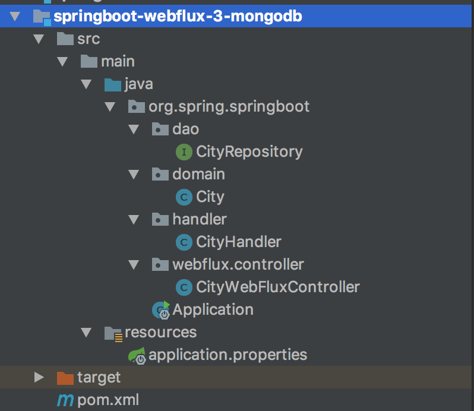
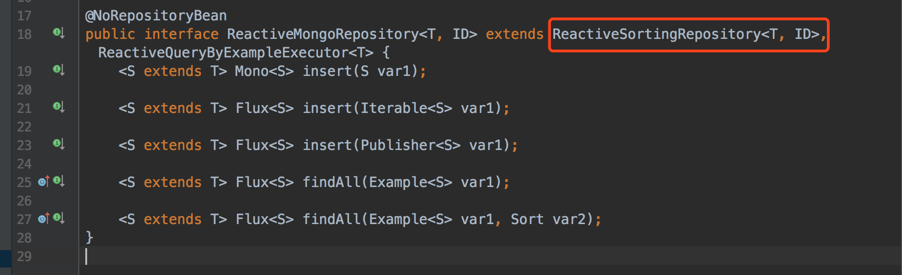
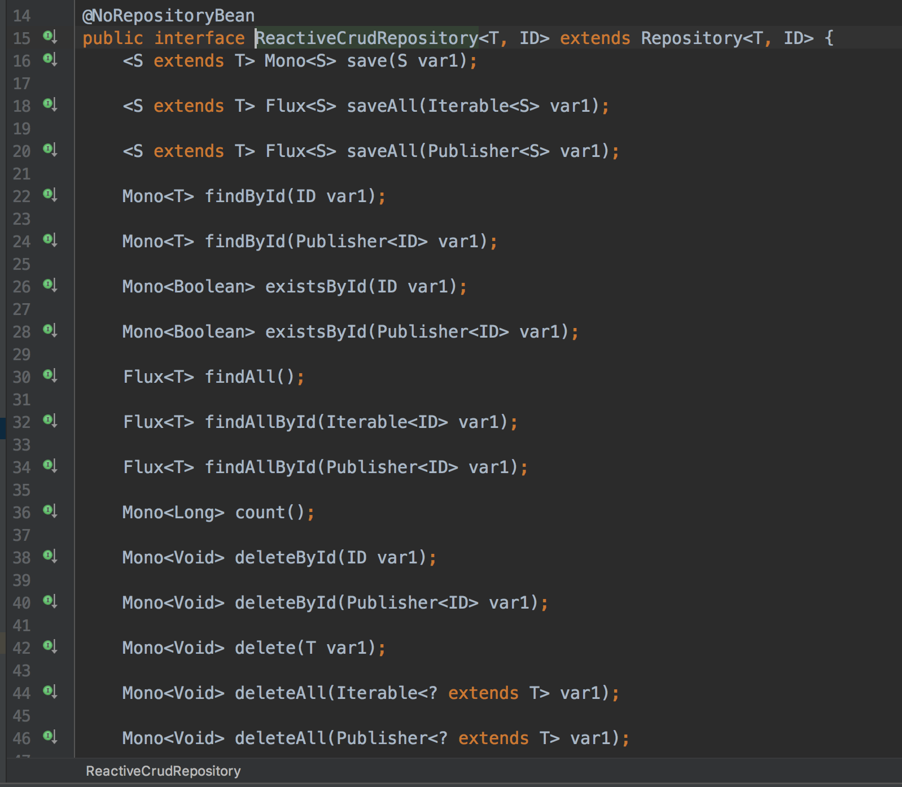
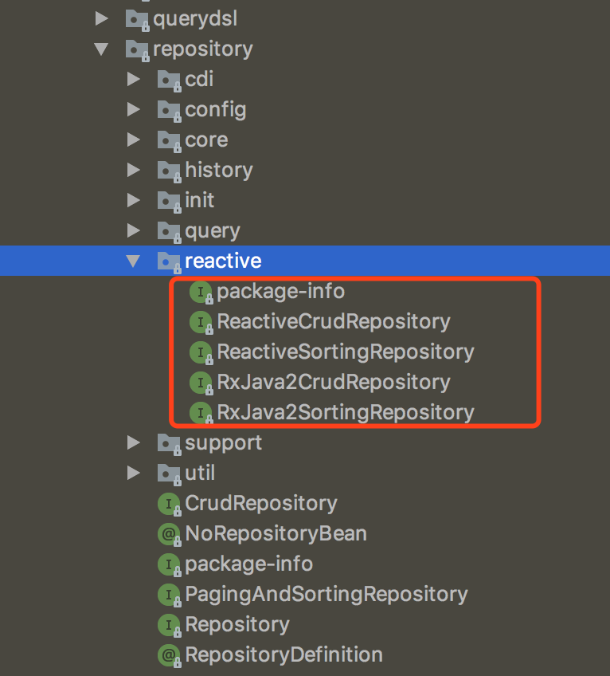
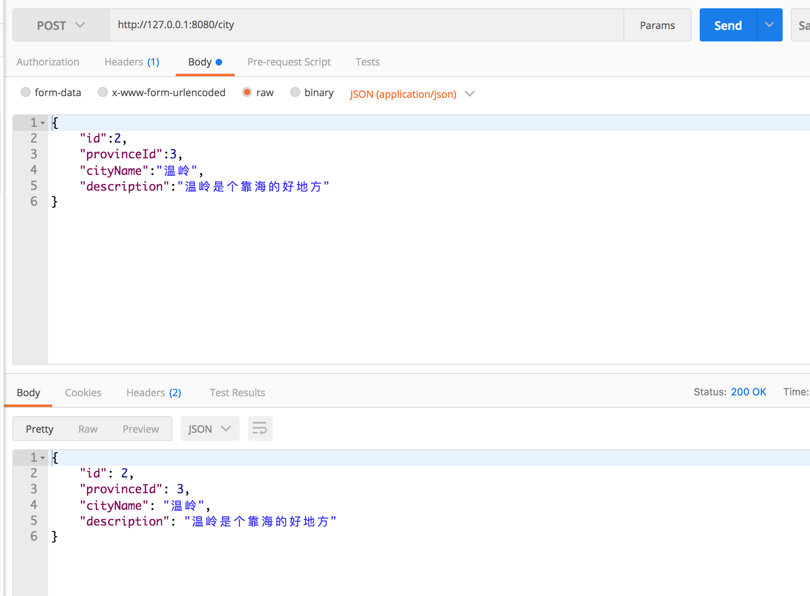
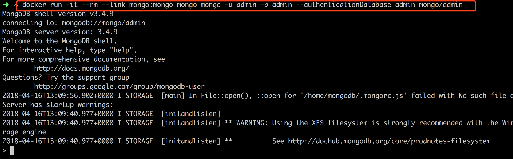
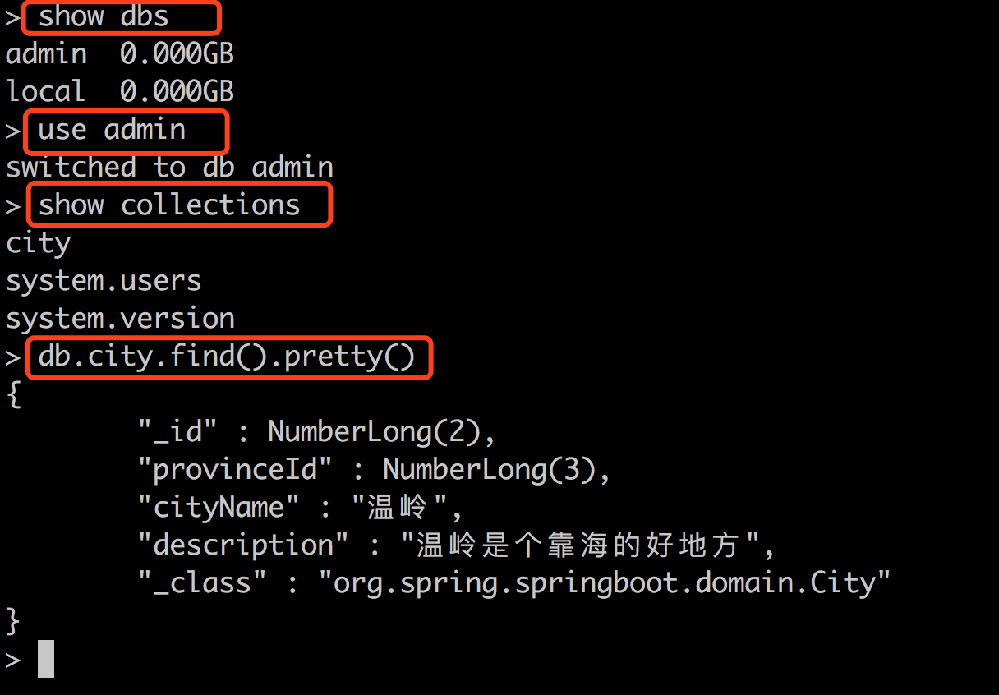

- 01 导读：课程概要.md.html
- 02 WebFlux 快速入门实践.md.html
- 03 WebFlux Web CRUD 实践.md.html
- 04 WebFlux 整合 MongoDB.md.html
- 05 WebFlux 整合 Thymeleaf.md.html
- 06 WebFlux 中 Thymeleaf 和 MongoDB 实践.md.html
- 07 WebFlux 整合 Redis.md.html
- 08 WebFlux 中 Redis 实现缓存.md.html
- 09 WebFlux 中 WebSocket 实现通信.md.html
- 10 WebFlux 集成测试及部署.md.html
- 11 WebFlux 实战图书管理系统.md.html
04 WebFlux 整合 MongoDB
前言
上一课的内容讲解了用 Map 数据结构内存式存储了数据，这样数据就不会持久化，本文我们用 MongoDB 来实现 WebFlux 对数据源的操作。
什么是 MongoDB？详见官网。
MongoDB 是一个基于分布式文件存储的数据库，由 C++ 语言编写，旨在为 Web 应用提供可扩展的高性能数据存储解决方案。
MongoDB 是一个介于关系数据库和非关系数据库之间的产品，是非关系数据库当中功能最丰富，最像关系数据库。
由于操作方便，本文用 Docker 启动一个 MognoDB 服务。如果 Docker 不会安装，请参考此文：Docker 安装与基本操作。
Docker 安装 MognoDB 并启动如下。
（1）创建挂载目录：
docker volume create mongo_data_db
docker volume create mongo_data_configdb
（2）启动 MognoDB：
docker run -d \
--name mongo \
-v mongo_data_configdb:/data/configdb \
-v mongo_data_db:/data/db \
-p 27017:27017 \
mongo \
--auth
（3）初始化管理员账号：
docker exec -it mongo mongo admin
// 容器名 // mongo命令 数据库名
# 创建最高权限用户
db.createUser({ user: 'admin', pwd: 'admin', roles: [ { role: "root", db: "admin" } ] });
（4）测试连通性：
docker run -it --rm --link mongo:mongo mongo mongo -u admin -p admin --authenticationDatabase admin mongo/admin
MognoDB 基本操作
类似 MySQL 命令，显示库列表：
show dbs
使用某数据库：
use admin
显示表列表：
show collections
如果存在 city 表，格式化显示 city 表内容：
db.city.find().pretty()
结构
类似上面讲的工程搭建，新建一个工程编写此案例。工程如图：

目录核心如下：
- pom.xml maven 配置；
- application.properties 配置文件；
- dao 数据访问层，本文要点。
新增 POM 依赖与配置
在 pom.xml 配置新的依赖：
<!-- Spring Boot 响应式 MongoDB 依赖 -->
<dependency>
<groupId>org.springframework.boot</groupId>
<artifactId>spring-boot-starter-data-mongodb-reactive</artifactId>
</dependency>
类似配了 MySQL 和 JDBC 驱动，肯定得去配置数据库。在 application.properties 配置下上面启动的 MongoDB 配置：
数据库名为 admin，账号密码也为 admin。
spring.data.mongodb.host=localhost
spring.data.mongodb.database=admin
spring.data.mongodb.port=27017
spring.data.mongodb.username=admin
spring.data.mongodb.password=admin
这就一个巨大的问题了，为啥不用我们常用的 MySQL 数据库呢？
答案是 Spring Data Reactive Repositories 目前支持 Mongo、Cassandra、Redis、Couchbase。不支持 MySQL，那究竟为啥呢？那就说明下 JDBC 和 Spring Data 的关系。
Spring Data Reactive Repositories 突出点是 Reactive，即非阻塞的。区别如下：
- 基于 JDBC 实现的 Spring Data，比如 Spring Data JPA 是阻塞的。原理是基于阻塞 IO 模型 消耗每个调用数据库的线程（Connection）。
- 事务只能在一个 java.sql.Connection 使用，即一个事务一个操作。
那如何异步非阻塞封装下 JDBC 的思想也不新鲜，Scala 库 Slick 3 就实现了。简单的实现原理如下：
- 一个事务多个操作，那么共享一个 java.sql.Connection，可以使用透明事务管理，利用回调编程模型去传递。
- 保持有限的空闲连接。
最后，我坚信非阻塞 JDBC 很快就会出现的，这样我们就开心的调用 MySQL 了。
对象
修改 org.spring.springboot.domain 包里面的城市实体对象类。修改城市（City）对象 City，代码如下：
import org.springframework.data.annotation.Id;
/**
* 城市实体类
*
*/
public class City {
/**
* 城市编号
*/
@Id
private Long id;
/**
* 省份编号
*/
private Long provinceId;
/**
* 城市名称
*/
private String cityName;
/**
* 描述
*/
private String description;
public Long getId() {
return id;
}
public void setId(Long id) {
this.id = id;
}
public Long getProvinceId() {
return provinceId;
}
public void setProvinceId(Long provinceId) {
this.provinceId = provinceId;
}
public String getCityName() {
return cityName;
}
public void setCityName(String cityName) {
this.cityName = cityName;
}
public String getDescription() {
return description;
}
public void setDescription(String description) {
this.description = description;
}
}
@Id 注解标记对应库表的主键或者唯一标识符。因为这个是我们的 DO，数据访问对象一一映射到数据存储。
MongoDB 数据访问层 CityRepository
修改 CityRepository 类，代码如下：
import org.spring.springboot.domain.City;
import org.springframework.data.mongodb.repository.ReactiveMongoRepository;
import org.springframework.stereotype.Repository;
@Repository
public interface CityRepository extends ReactiveMongoRepository<City, Long> {
}
CityRepository 接口只要继承 ReactiveMongoRepository 类即可，默认会提供很多实现，比如 CRUD 和列表查询参数相关的实现。ReactiveMongoRepository 接口默认实现了如下：
<S extends T> Mono<S> insert(S var1);
<S extends T> Flux<S> insert(Iterable<S> var1);
<S extends T> Flux<S> insert(Publisher<S> var1);
<S extends T> Flux<S> findAll(Example<S> var1);
<S extends T> Flux<S> findAll(Example<S> var1, Sort var2);
如图，ReactiveMongoRepository 的集成类 ReactiveSortingRepository、ReactiveCrudRepository 实现了很多常用的接口：

ReactiveCrudRepository 接口如图所示：

另外可以看出，接口的命名是遵循规范的，常用命名规则如下：
| 关键字 | 方法命名 |
|---|---|
| And | findByNameAndPwd |
| Or | findByNameOrSex |
| Is | findById |
| Between | findByIdBetween |
| Like | findByNameLike |
| NotLike | findByNameNotLike |
| OrderBy | findByIdOrderByXDesc |
| Not | findByNameNot |
常用案例，代码如下：
Flux<Person> findByLastname(String lastname);
@Query("{ 'firstname': ?0, 'lastname': ?1}")
Mono<Person> findByFirstnameAndLastname(String firstname, String lastname);
// Accept parameter inside a reactive type for deferred execution
Flux<Person> findByLastname(Mono<String> lastname);
Mono<Person> findByFirstnameAndLastname(Mono<String> firstname, String lastname);
@Tailable // Use a tailable cursor
Flux<Person> findWithTailableCursorBy();
源码层面
ReactiveCrudRepository 抽象在 reactive 包，如图：

这里我们可以看出，支持了 Reactive 还支持了 RxJava。对应老的 CrudRepository 新增了 ReactiveCrudRepository 接口及各种存储实现。
处理器类 Handler 和控制器类 Controller
修改下 Handler，代码如下：
@Component
public class CityHandler {
private final CityRepository cityRepository;
@Autowired
public CityHandler(CityRepository cityRepository) {
this.cityRepository = cityRepository;
}
public Mono<City> save(City city) {
return cityRepository.save(city);
}
public Mono<City> findCityById(Long id) {
return cityRepository.findById(id);
}
public Flux<City> findAllCity() {
return cityRepository.findAll();
}
public Mono<City> modifyCity(City city) {
return cityRepository.save(city);
}
public Mono<Long> deleteCity(Long id) {
cityRepository.deleteById(id);
return Mono.create(cityMonoSink -> cityMonoSink.success(id));
}
}
不要对 Mono、Flux 陌生，把它当成对象即可。继续修改控制器类 Controller，代码如下：
@RestController
@RequestMapping(value = "/city")
public class CityWebFluxController {
@Autowired
private CityHandler cityHandler;
@GetMapping(value = "/{id}")
public Mono<City> findCityById(@PathVariable("id") Long id) {
return cityHandler.findCityById(id);
}
@GetMapping()
public Flux<City> findAllCity() {
return cityHandler.findAllCity();
}
@PostMapping()
public Mono<City> saveCity(@RequestBody City city) {
return cityHandler.save(city);
}
@PutMapping()
public Mono<City> modifyCity(@RequestBody City city) {
return cityHandler.modifyCity(city);
}
@DeleteMapping(value = "/{id}")
public Mono<Long> deleteCity(@PathVariable("id") Long id) {
return cityHandler.deleteCity(id);
}
}
运行工程
一个 CRUD 的 Spring Boot WebFlux 工程就开发完毕了，下面运行工程验证下。使用 IDEA 右侧工具栏，单击 Maven Project Tab 选项，点击使用 Maven 插件的 install 命令。或者使用命令行的形式，在工程根目录下，执行 Maven 清理和安装工程的指令：
cd springboot-webflux-3-mongodb
mvn clean install
在控制台中看到成功的输出：
... 省略
[INFO] ------------------------------------------------------------------------
[INFO] BUILD SUCCESS
[INFO] ------------------------------------------------------------------------
[INFO] Total time: 01:30 min
[INFO] Finished at: 2017-10-15T10:00:54+08:00
[INFO] Final Memory: 31M/174M
[INFO] ------------------------------------------------------------------------
在 IDEA 中执行 Application 类启动，任意正常模式或者 Debug 模式，可以在控制台看到成功运行的输出：
... 省略
2018-04-10 08:43:39.932 INFO 2052 --- [ctor-http-nio-1] r.ipc.netty.tcp.BlockingNettyContext : Started HttpServer on /0:0:0:0:0:0:0:0:8080
2018-04-10 08:43:39.935 INFO 2052 --- [ main] o.s.b.web.embedded.netty.NettyWebServer : Netty started on port(s): 8080
2018-04-10 08:43:39.960 INFO 2052 --- [ main] org.spring.springboot.Application : Started Application in 6.547 seconds (JVM running for 9.851)
打开 POST MAN 工具，开发必备。进行下面操作。
新增城市信息 POST http://127.0.0.1:8080/city。

连接 MongoDB，验证数据
连接 MongoDB：
docker run -it --rm --link mongo:mongo mongo mongo -u admin -p admin --authenticationDatabase admin mongo/admin

显示库列表：
show dbs
使用某数据库：
use admin
显示表列表：
show collections
如果存在 city 表，格式化显示 city 表内容：
db.city.find().pretty()

总结
这里探讨了 Spring WebFlux 的如何整合 MongoDB，整合其他存储 Cassandra、Redis、Couchbase 就大同小异了。下面，我们已经可以整合 Thymeleaf，更好的页面展示给大家，顺便让大家学习下 Thymeleaf 的基本用法。